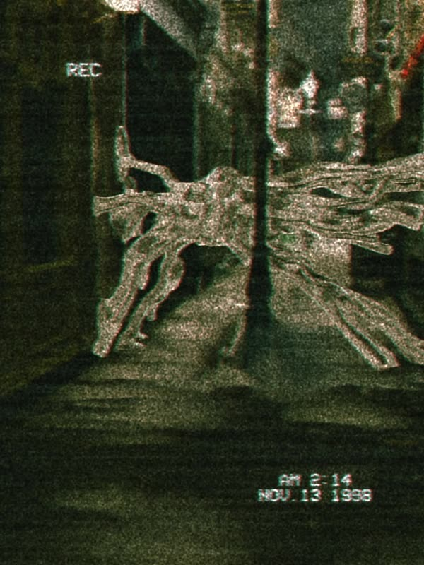
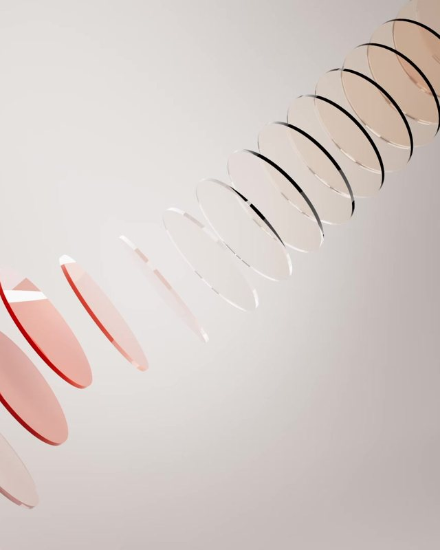
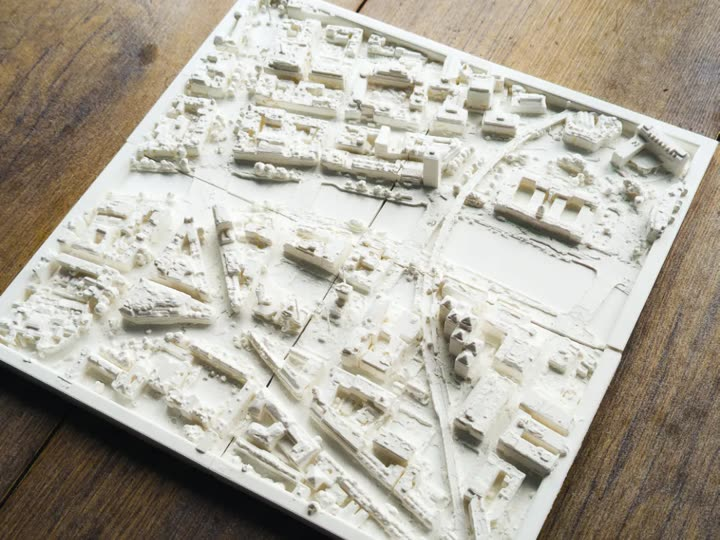
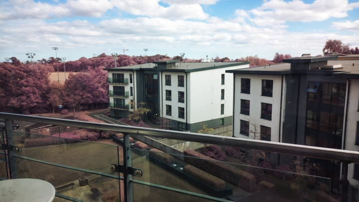
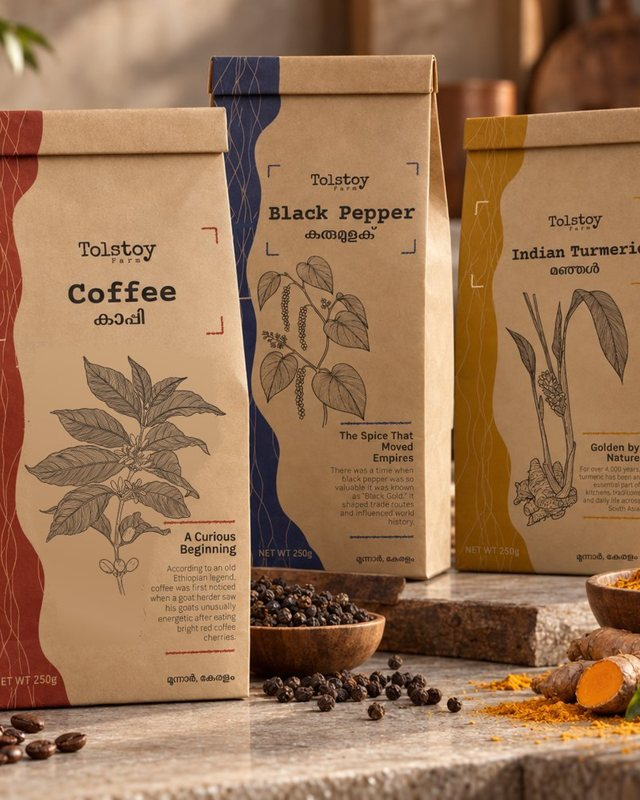
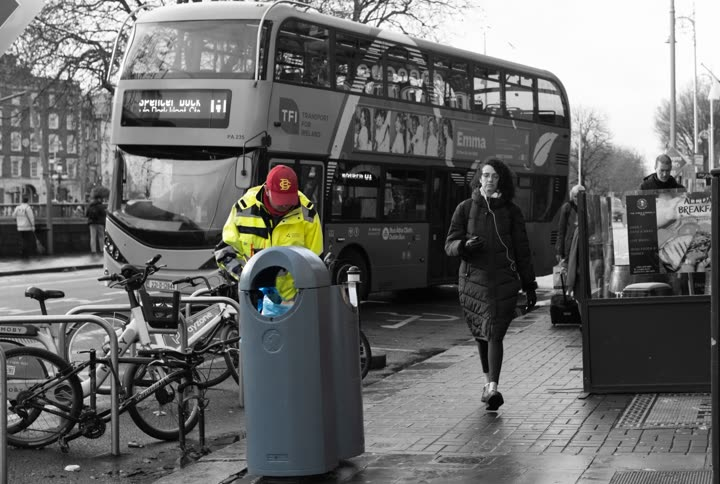
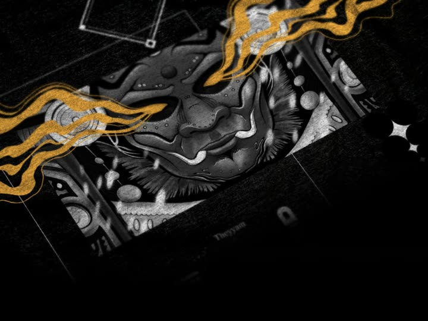
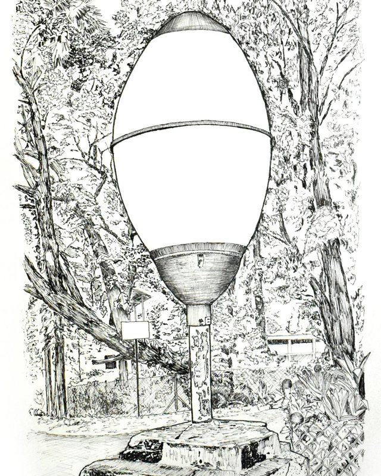

Harigovind Sajimon: dreamer, explorer and storyteller, working in 3D, motion and film.
Harigovind Sajimon –
Creative Designer
3D, motion, making and brand ·
Senior Designer at Studio Paperheads
Selected work
-

01 2:14 AM: A Creature in the Alley 3D, Geometry Nodes & Compositing · 2026 A Gaussian-splat alley, relit in Blender, with a creature built entirely in Geometry Nodes crawling through it. -

02 DiskField: Procedural Glass Disks Client Motion Design & Geometry Nodes · 2026 A procedural Geometry Nodes system for a client project: a field of glass disks that turn, grow and glow orange as an effector passes through them. -

03 City in Hand: 3D-Printed Dublin 3D Pipeline & Making · 2026 10,000 captured map meshes turned into one 3D-printed model of Dublin. -

04 Unseen: Infrared Camera In progress Hardware & Interaction Design · 2026 A hand-built Raspberry Pi camera that shoots near-infrared, false-colour photos. -
 05
Lithophane Lamp
3D Printing & Product Design · 2026
A photograph turned into a lithophane lamp: made first as a birthday gift, then turned into a standard workflow I now use to make them on demand.
05
Lithophane Lamp
3D Printing & Product Design · 2026
A photograph turned into a lithophane lamp: made first as a birthday gift, then turned into a standard workflow I now use to make them on demand.
-

06 Tolstoy Farm Client Brand Identity & Packaging · 2026 Identity and packaging for a coffee, tea and spice brand from Munnar, Kerala.
Motion & 3D
Real-time renders, animation studies and experimental motion work.
Chroma
A growing collection of photographs documenting people, colour, architecture and everyday moments.
This view needs WebGL, which isn't available in this browser.
Color Grading
More work
8 projects · 2019–2026
-
01
WealthX
Product & Brand Design
2026
WealthX links every account, investment, and asset into a single AI-powered intelligence layer, so your capital always knows exactly where it stands.

-
02
Hiro: Task Starting Assistant
Behavioural Design
2026
A behavioural assistant that reduces the friction between intention and starting work.

-
03
City: Beneath the Surface
Data Visualization
2025
Dublin's hidden workforce rendered as a physics-based data narrative.

-
04
Dub.Transit: Dublin Public Transport App
User Experience Design
2025
Real-time transit interface with glanceable route cards.

-
05
Theyyam Threads
Visual Design
2023
A Kerala ritual art form translated into contemporary apparel.

-
06
Aujus
System Design
2022
A 5-week semester project to understand and design for complex, interconnected socio-economic problems.

-
07
ArtBox
Product Design
2022
A mediatory system for artisans to sell their knowledge and craft, helping customers get hands-on experience.

-
08
Lights and Lamps: Pen Illustrations
Illustration
2019
Hand-drawn illustrations of the lights and lamps around IIT Bombay, with a Micron pen in a sketchbook.

About
Kerala · Mumbai · Dublin
I’m a creative designer from Kerala, now based in Dublin. 3D is where I start: renders, motion and procedural systems, carried into brand, print and things I make by hand.
I build scenes in Blender, design the systems behind them, and take the work off the screen when it needs to be held, from 3D-printed objects to packaging. Brand, UI and layout sit alongside, so I can carry a project from first idea to finished piece.
Download CV- Early years Kerala, India Started out preparing for architecture, then wrote the national design entrance exams, got into all of them, and chose IIT Bombay.
- 2019–2023 IIT Bombay Bachelor of Design. Human-centred design, visual storytelling, interactive and immersive media. Graduation project: a VR experience in Unity.
- 2020–2022 YoZu, IIT Bombay campus Visual Designer at a startup founded by IIT Bombay alumni, working mostly from campus alongside the degree. 3D assets and UI for an educational mobile product, and mentoring a team of five junior designers.
- 2022 Tata Consultancy Services, Mumbai Design intern. 3D environment and asset concepts for TCS’s metaverse project.
- 2023–2024 A year between degrees Creative Director at Wesualize Studios, Kochi, on VFX campaigns for brands including Birla Group and P.F. Chang’s, alongside freelance branding, UI and 3D work.
- 2024–2025 TU Dublin MA Creative Arts, Visual Communication. Graduation project: City: Beneath the Surface, exhibited to 500+ attendees.
- 2025–2026 Grido, Munich (remote) Visual Designer. UI and 3D visuals for an AI health-assistant product.
- 2026 Ireland India Council, Dublin Posters, banners and event ID cards for India Day 2026.
- Now Studio Paperheads, Mumbai (remote) Senior Designer. Leading the visual direction for a university convocation, with a team of four junior designers.